Электрика в Ташкенте
Кабель и провод
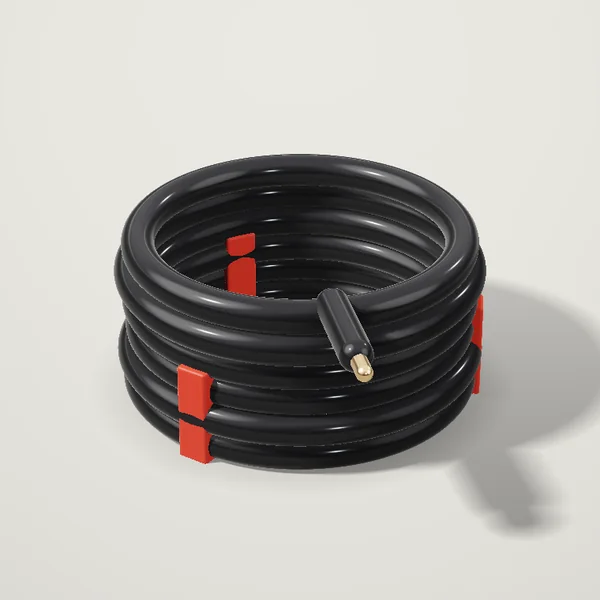
Кабель ВВГнг 3×2,5от 420 000 сум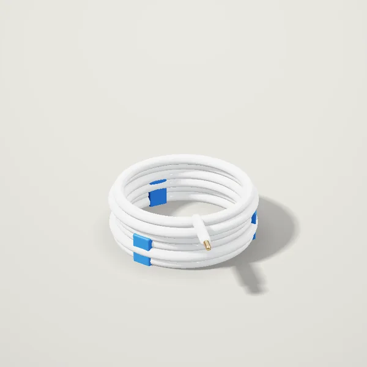
Провод ПВС 2×1,5от 6 500 сум- Кабель ВВГнг 3×1,5от 273 000 сум
- Кабель ВВГнг 3×4от 672 000 сум
- Кабель ВВГнг 3×6от 988 000 сум
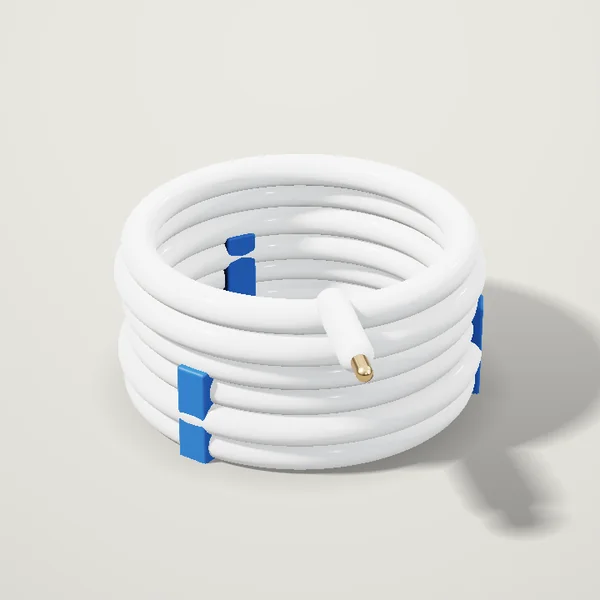
Кабель NYM 3×2,5, белыйот 504 000 сум- Провод ПВС 3×2,5от 12 400 сум
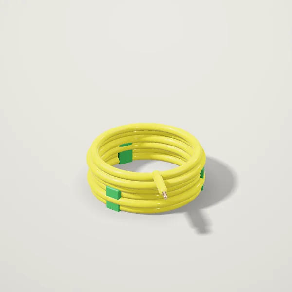
Провод ПуГВ 1×2,5, жёлто-зелёныйот 3 900 сум
Розетки и выключатели
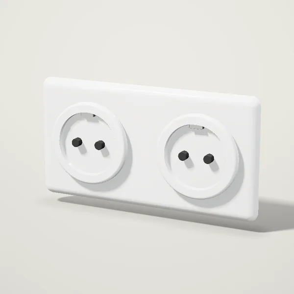
Розетка двойная с заземлениемот 37 500 сум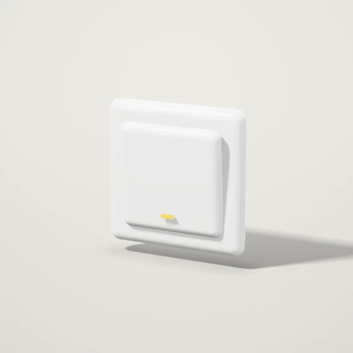
Выключатель одноклавишныйот 24 000 сум- Розетка одинарная с заземлениемот 23 000 сум
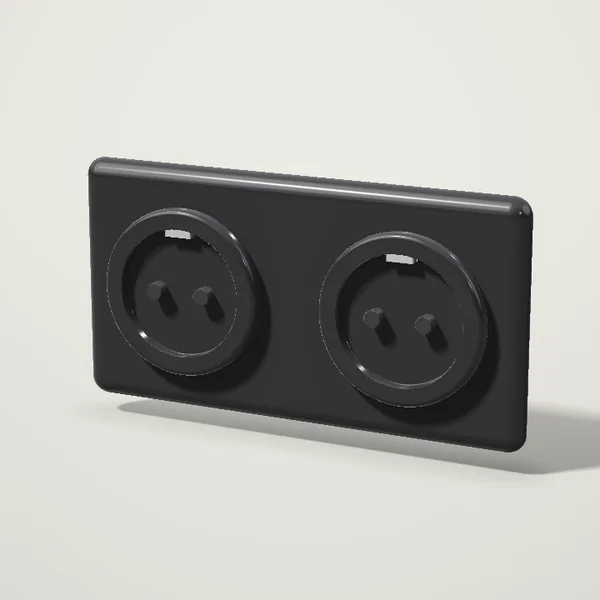
Розетка двойная, чёрнаяот 44 000 сум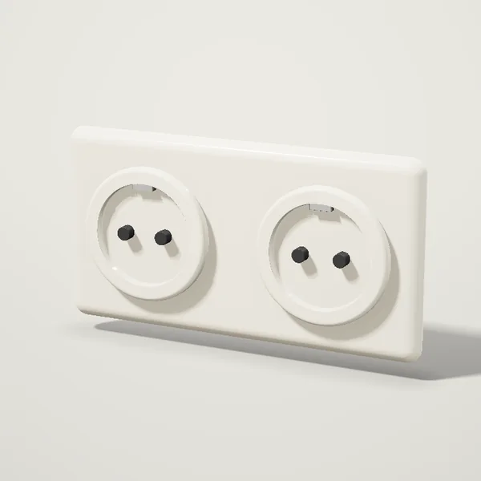
Розетка двойная, бежеваяот 40 000 сум- Выключатель двухклавишныйот 31 000 сум
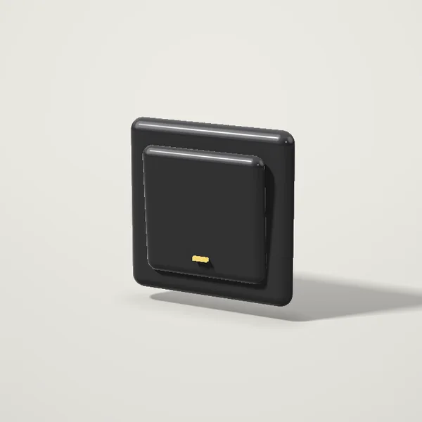
Выключатель одноклавишный, чёрныйот 29 000 сум
Автоматика и щиты
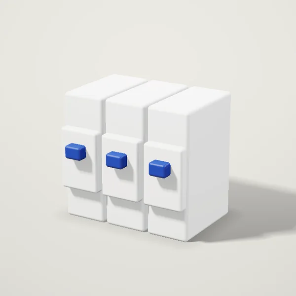
Автоматический выключатель C16от 45 000 сум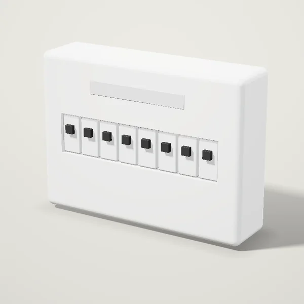
Щит распределительный на 12 модулейот 165 000 сум- Автоматический выключатель C10от 45 000 сум
- Автоматический выключатель C25от 47 500 сум
- Автоматический выключатель C32от 49 500 сум
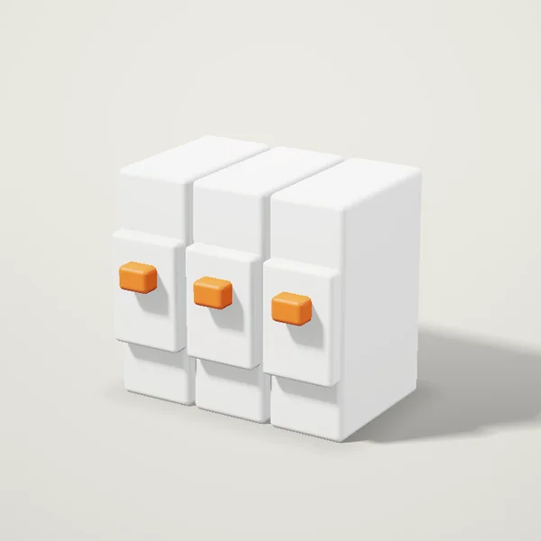
УЗО 25 А, 30 мАот 225 000 сум- Щит распределительный на 24 модуляот 264 000 сум
- Щит распределительный на 4 модуляот 74 500 сум